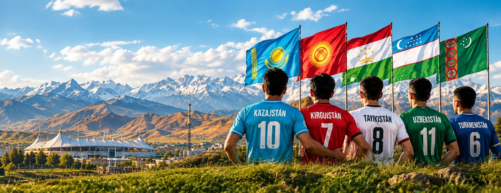

Fútbol en Asia Central
Blog, ligas y datos de las cinco federaciones centroasiáticas, y un puente directo entre el talento español y sus clubes.

Imagen ilustrativa generada con IA.
Explora las cinco ligas
Ver todas las ligas →- Ordabasy lidera con 55 ptsLa única liga de la región en competiciones UEFA en vez de AFC; el Kairat Almaty eliminó al Celtic en la previa de Champions 2025-26.Ver liga completa →
- Neftchi Fergana lidera con 45 ptsPakhtakor Tashkent, el club más laureado del país, contra un Neftchi que defiende el título de 2025 muy cómodo en cabeza.Ver liga completa →
- Arkadag lidera con 42 ptsLa liga más pequeña de las cinco (8 equipos) y la más desigual: el Arkadag arrasa hacia su tercer título consecutivo.Ver liga completa →
- FC Özgön lidera con 44 ptsAmpliada de 14 a 16 equipos esta temporada; el campeón vigente, Bars Issyk-Kul, ganó su primer título en 2025 y ahora pelea en zona media.Ver liga completa →
- Khosilot Parkhar lidera con 31 ptsEl Istiqlol domina la historia de esta liga con 14 títulos y sigue ahí arriba, pero esta vez le pisan los talones desde el minuto uno.Ver liga completa →